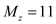
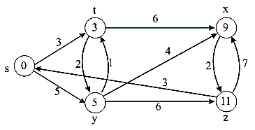
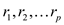
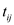
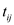
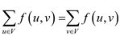
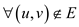
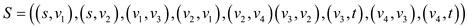
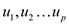
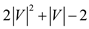

Consider the single source shortest path linear program:
Maximize dt
Subject to
for each edge
ds = 0.
Where dt is the maximum weight of each target vertex in the edge (u, v), du and dv are the weights of the shortest path from source vertex to the vertices u and v respectively vertices in the edge (u, v) ds is the source vertex. Converting this program into standard form of linear equations.
In single source shortest path problem we find the path from a single source vertex to every other vertex in the graph. For finding the shortest path for each vertex from the source vertex we use the linear programming approach in which linear equations are formed from the graph.
The standard form of linear equations for finding the value of n real variables, for given n real numbers and, m real numbers and real numbers for and is as:
Maximize
Subject to
for 

According to the standard form of linear equations the transformation of single source shortest path problem. Linear program to compute the shortest-path weight from source s to target t by maximizing dt.
Maximize dt
Subjected to
for
(on
replacing by )
)
Whereis the weight of the shortest path from source vertex s to s’ and. The source vertex initially receives a value ds = 0, which never changes.
Consider the graph 24.2(a) given in the textbook to write the linear routine that corresponds to the graph for finding the single source shortest path from node s to node y.
Linear Program for finding the shortest path:
In order to find the shortest path, create a linear programming model and find the solution of the problem by using the following procedure.
1. Identify the variables of the problem.
2. Define the constraints of the problem. Constraint means defining inequalities and equation of the problem.
3. Define the objective function of the problem.
In single source shortest path problem, the aim is to get the shortest path from the source node of the graph to all the nodes in the concerned graph.
• To obtain the result, the maximization of the objective function, which is the weight function of smallest path from source vertex to target vertex, is done.
• To transform the shortest path problem, the maximization of the objective function, dy is required.
• The calculation of objective function can be calculated by adding the weights of each edge in between the source and target vertex of graph.
Consider the weighted graph for finding the shortest path:
In the above graph, source vertex is s and the destination vertex is y, The objective of the problem is to find the minimum distance from source vertex s to destination vertex y.
Identification of Variables:
Defining Constraint:
Initialize source vertex Ms with 0 and all other vertex (My, Mx, Mz, Mt ) ≥ 0.
Objective function of the problem is defined:
Calculate the value of weight for each and every vertex of the graph. If any vertex is calculated more than one time, then the value, which is the minimum, is considered.
Here for example: Vertex Mx has two values 9 and 18. However, the value 9 is considered, as it is the minimum.
There are two paths going from source vertex s to destination vertex y which are as follows:
1. Going directly from source vertex to destination vertex.
2. Going from source vertex to destination vertex through intermediate vertex Mt.
Diagram showing the shortest path from s to y is as shown:
Here, both the path of going from source vertex to destination vertex is generating the same value, that is 5.
Thus, the shortest path from s to y is 5.
Linear Program for finding the shortest path:
In order to find the shortest path, create a linear programming model and find the solution of the problem by using the following procedure.
1. Identify the variables of the problem.
2. Define the constraints of the problem. Constraint means defining inequalities and equation of the problem.
3. Define the objective function of the problem.
In single source shortest path problem, the aim is to get the shortest path from the source node of the graph to all the nodes in the concerned graph.
• To obtain the result, the maximization of the objective function, which is the weight function of the smallest path from source vertex to target vertex, is done.
• In graph G, to find the shortest paths weight from
source vertex s to vertex  , the linear
program consists of a variable dv which
represents the maximum value of weight of target for an edge (u,
v).
, the linear
program consists of a variable dv which
represents the maximum value of weight of target for an edge (u,
v).
• For the representation of maximum weight from single source s to any other vertex in the graph, the summation of all the path weights will be used as the objective function.
• According to the standard form of linear equations, the linear
program computing the single source shortest paths weight from
source s to any vertexby
maximizing dv is as shown below:
Maximize
Subject to
for
ds=0
Consider the weighted graph for finding the shortest path:
In the above graph source vertex is s and the destination vertex is z.
The objective of the problem is to find the minimum distance from source vertex s to the destination vertex z.
Identification of Variables:
Defining Constraint:
Initialize source vertex Ms with 0 and all other vertex (My, Mx, Mz,Mt ) ≥ 0.
Calculate the value of weight for each and every vertex of the graph. If any vertex is calculated more than one times, then the value which is minimum is considered.
Here for example: Vertex Mx has two values 9 and 18. But the value 9 is considered as it is minimum.
In this, the shortest path for going from source vertex s to destination vertex z which is as follows:

Consider the diagram of shortest path:

In the above diagram, the shortest path from source vertex s to all the vertices is shown.
Here, ds is the weight of the shortest path
from source vertex s to itself which never changes while
summation function dv is the shortest path weight
of each path to vertex v from source vertex s
where.
Linear program for maximum flow problem
Linear programming is a way of achieving the maximum possible outcome from a set of resources that are represented as an integrated mathematical design.
In technical terms, linear programming is a way to achieve optimum results from the linear programming problems. This optimization is subject to a few constraints.
Standard form of linear program:
In a standard form there is a set of p real numbers that
are, another
set of q real numbers that are and a set
of
and a set
of real numbers
that arewhere
real numbers
that arewhere
 and
and .
.
Now the objective is to find p real numberssuch that
Maximize
 … … (1)
… … (1)
And that is subject to
… … (2)
 … … (3)
… … (3)
The first expression is called the objective function. The second and the third expression show the constraints.
This way a linear program can be put into the standard form.
In practice, there are several examples of problem that can be manifested as the linear programs. Maximum flow problem is one such example.
Maximum Flow:
A flow network is nothing but a directed graph of vertices and
edges, each of which has some capacity. The capacity defines the
data value that can go through that edge. The capacity is always a
positive integer. One more thing is that if there is an edge from a
vertex  to
vertex
to
vertex , then there
can be no edge from to
.
, then there
can be no edge from to
.

In the above diagram, vertex s is the source and the vertex t is the sink or destination. The capacity of each edge is shown alongside the edge.
Now, the possible flows pathsfrom the origin to destination can be:

There might be a few more flow paths as well. The maximum flow possible through a path is equal to the minimum capacity of an edge.
For example in the first flow path, the maximum flow would be 12.
More formally, the flow can be defined as below:
A flow which is non-negative real valued function and fulfill
the requirement of the capacity and the flow conservation
restriction. Here is the quantity  which is
the flow from the vertex u to v and the value of flow
f is defined as:
which is
the flow from the vertex u to v and the value of flow
f is defined as:
This is equal to the flow out from the source minus the flow into the source.
Consider the diagram as shown below:
A flow network G = (V, E) for a company, in which source s is a factory and sink t is a warehouse, ships pucks through intermediate cities. The capacity of the edges is written by them.
The non-negative quantity f (u, v) is the flow from u to v.
The valueof a flow f is defined as:
It is the total flow; incoming flow is deducted from the outgoing flow.
Now, to maximize this,
Maximize
Subject to condition
 (Flow
constraints)
(Flow
constraints)
 (No flow)
(Capacity constraints)
The inequality constraints conform to the capacity constraint for the flow network. The constraints that are in the second set conform to the maximum flow constraint of the flow network.
This is the mathematical form of the desired linear program. If the same is applied on the figure shown above, the sets would be as follows:
The set of vertices
The set of edges

Capacity matrix:
In the matrix, the capacity of the edges can be found by locating the intersection of the starting and the ending vertex. It is as shown below:

And the flow would be:
This makes the following implication:
Objective function:
Maximize
Capacity constraint:
,
,
,
The conservation of flow constraint:
The source and target constraint
Non-negativity constraint
Linear Program
Linear programming is a way of achieving the maximum possible outcome from a set of resources that are represented as an integrated mathematical design.
In the technical terms the linear programming is a way to achieve optimum results from the linear programming problems. This optimization is subject to a few constraints.
Standard form of linear program:
In a standard form there is a set of p real numbers that
are, another
set of q real numbers that are and a set
of
real numbers that arewhere
and.
Now the objective is to find p real numberssuch that
Maximize
… … (1)
And that is subject to
… … (2)
… … (3)
The first expression is called the objective function. The second and the third expression show the constraints.
This way, a linear program can be put into the standard form.
In practice, there are several examples of problem that can be manifested as the linear programs. Maximum flow problem is such a problem.
Maximum Flow:
A flow network is nothing but a directed graph of vertices and
edges. Each of the graph edge has a capacity. The capacity defines
the data value that can go through that edge. The capacity is
always a positive integer. One more thing is that if there is an
edge from a vertex to vertex
than there can be no edge from to
.
In the above diagram, vertex s is the source and the vertex t is the sink or destination. The capacity of each edge is shown alongside the edge.
Now, the possible flows paths from the source to destination can be:
There might be a few more flow paths as well. The maximum flow possible through a path is equal to the minimum capacity of an edge.
For example in the first flow path, the maximum flow would be 12.
More formally, the flow can be defined as below:
A flow which is non-negative real valued function and satisfy the capacity and the flow conservation constraints.
Now, the quantity which is
the flow from the vertex u to v and the value of flow
f is defined as,
This is equal to the flow out from the source minus the flow into the source.
Now, the linear program for the maximum flow has to be written
so that it uses only  constraints.
constraints.
Linear program:
Consider the linear program (29.47-29.50) in the book.
Considering the flow equation, the number of variables in the equation would be and that is variables.
After considering the flow constraints between vertices, that are referred to in the equation 29.48-29.50, the total number of constraints would be:
• The first set of constraints that is referred to in the
equation 29.48, is bound to the vertices. Each variable would be
subject to the restriction and that would yield total number of
constraints.
In this scenario the total number of constraints to be followed
would be .
.
• The second set of constraints that is referred to in the equation 29.49 restricts the flow excluding the source and the target variables.
So the number of constraints yield over here would be two less than the total number of variable that is.
The last set of constraints that is referred to in the equation 29.50 specifies the non-negativity of the flow that is again the subject to the number of total variables and that is.
Adding all of them the linear program has  constraints. This linear program mainly focuses on vertices and capacity of edges which are formed by vertices.
In order to achieve the desired constraint
limit, network coding can be used as a remedy. Network coding is a
technique used for making the network more secure and maximize the
throughput of the network.
Using coding reduces the problem to the polynomial time.
When the flow network is considered to be the coded network, each flow that is the part of the network satisfies the flow conservation constraint. Suppose that all of the flows are represented by a vector where.
The flows are, however, allowed to overlap. This generates the conceptual flow that satisfies the capacity constraint.
Moreover, the conceptual flow is not subject to the flow conservation constraint. In that case the flow can be represented using the below equations:
Maximize:
… … (4)
Subject to condition:
… … (5)
… … (6)
Where,
Now, the number of constraints that are to be followed can be
calculated easily. Equation 5 shows the flow constraint that, being
every u a member of set of vertices would yield the
complexity of. The
constraint in equation 6 is the capacity constraint that would be
the , being
every edge is a member of the set of edges.
, being
every edge is a member of the set of edges.
By adding these complexities, the total number of constraints that need to be followed would be.
The maximum-bipartite-matching problem
Linear programming is a way of achieving the maximum possible out-come from a set of resources that are represented as an integrated mathematical design.
In technical terms, the linear programming is a way of achieving optimum results from the linear programming problems. This optimization is subject to a few constraints.
Standard form of linear program:
In a standard form there is a set of p real numbers that
are, another
set of q real numbers that are and a set
ofreal numbers
that arewhere,
Now, the objective is to find p real numberssuch that
Maximize
… … (1)
And that is subject to
… … (2)
… … (3)
The first expression is called the objective function. The second and the third expression show the constraints.
This way, a linear program can be put into the standard form.
Linear programming can be used to represent many practical applications. Bipartite graph is one such example.
Bipartite Graph:
A bipartite graph can also be referred to as the bi-graph. It is a graph such that their vertices are divided into the two disjoint sets A and B in such a way that every edge used to connects a vertex in A to that of the vertex in B. So it can be said that the set A and B are independent sets. Its characteristics:
1. A graph is a bipartite only if it has 2-colorable properties that are the colouring of a graph with two colors.
2. A concerned graph is bipartite if it does not have an odd cycle.
3. A bipartite graph has a symmetric spectrum.
Maximum-bipartite-matching problem:
In the informal language, the maximum-bipartite-problem can be illustrated as below:
This is the procedure of finding the largest possible matching in a bipartite graph.
A matching in a concerned bipartite graph is the process of finding a set of maximum edges such that none of them have a common vertex as end point.
So if the two disjoint sets of graph vertices are G1 and G2 and E’’ is the matching vertex then:
For any, where x and y are the end points of the edge.
If
Than
Consider an example as:
In the above graph, if the edges are selected as:
Then, all of the vertices of the concerned graph are covered. And, this is termed to be the maximal matching of the graph.
Now, a linear program can be written for this.
As it is already known that a linear program is written keeping two things in mind. The first thing is the objective function and the second is constraints that restrict the objective function.
In the case of bipartite matching, the formula being used for finding the matching is the objective function and the restrictions that no two edges must contain a common vertex should be the set of constraints for that objective function.
Forevery single of the edge <a, b> of the graph a new variable is introduced. And if the variable is set to 1 then the given is said to be matching and if it is set to 0, then it is not in the matching set.
Initially, the vertices have to be covered as many vertices as possible it means the inclusion of as many edges as possible. And it can be accomplished by maximizing the objective function as:
In this, it must be made sure that no two edges occur in matching. It can be seen that two edges leave the vertex P so the constraints is applied and that is
It ensures that only one of the two edges has a matching.
Along with that, for R and S
Linear program:
Now, the required linear program is:
Maximize:
… … (4)
Subject to constraints:
… … (5)
… … (6)
… … (7)
Here, all.
Linear program for Minimum-cost multi commodity-flow problem
Linear programming is a way of achieving the maximum possible outcome from a set of resources that are represented as an integrated mathematical design.
In the technical terms the linear programming is a way to achieve optimum results from the linear programming problems. This optimization is subject to a few constraints.
Standard form of linear program:
In a standard form there is a set of p real numbers that
are, another
set of q real numbers that are and a set
ofreal numbers
that arewhere,
Now the objective is to find p real numberssuch that
Maximize
… … (1)
And that is subject to
… … (2)
… … (3)
The first expression is called the objective function. The second and the third expression show the constraints.
This way a linear program can be put into the standard form.
Minimum-cost multi commodity-flow problem:
The minimum cost multi commodity problem is a type of optimization problems in which the least cost method is used for moving two or more types of quantities from the locations where the items are produced to the location where they must be consumed, and the transport mechanism used are treated as two separate process form a type of networks.
It is a very interesting topic for commodity transportation problem. It has its application in various sectors of transportation as: railways, airlines use it (the economy-class and the first class are treated as two separate “commodities”).
Commodity flow network is just like a flow network in which various distinct paths are given, so that to travel the destination from the source, different paths can be followed. In this there are a number of sources and respectively multiple destinations. Each edge that lies in the path has a capacity and the cost associated with it.
The flow through the edge is always less than or equal to the capacity of the edge. Different bunches of flow or commodities can follow different paths to reach the destination.
Below given is an example of the commodity flow network.
In the above diagram, for all of the edges the first number shows the cost of visit and the second number shows the capacity of the edge. It is easy to observe that different commodities, say v1 and v5 in this case, would take different paths to reach the respective destinations that might be v2 and v6 respectively.
Both of v1 and v5 may have their own flow demands. The objective is to find the maximum possible flow through the network with the least cost.
Now, given a directed graph G (V, E) with a set of vertices V and the set of edges E. In the graph each edge (u, v) has a capacity defined as c (u, v)>=0, that is the capacity is always greater than or equal to zero. Each edge has a costassociated with it. Here are given k different commodities as and the flow is
defined for commodity i and the aggregate flow on the edge
(u, v). The cost of the flow is
is
defined for commodity i and the aggregate flow on the edge
(u, v). The cost of the flow is . Now a
feasible flow with the minimum cost can be found out in the form of
linear program as below.
. Now a
feasible flow with the minimum cost can be found out in the form of
linear program as below.Linear Program:
In the minimum-cost multi commodity flow problem, the cost of a
flow is as already
specified.
For minimum cost, commodities come in the picture in which every
commodity has a triplet. There are k commodities and for a
particular commodity i, the flow is fi and
the aggregate flow is . Every
triplet has source and sink, so there will be a capacity c
for particular commodities.
. Every
triplet has source and sink, so there will be a capacity c
for particular commodities.
Now, combining all assumptions and minimizing the feasible flow cost,
Minimize … … (4)
Subject to the condition,
… … (5)
For … … (6)
For … … (7)
The first constraint is along multiple commodities and the second and the third constraint are along the single commodity.
Equation (4) shows the objective function for the problem. It illustrates that the cost for the aggregate flow must be reduced as much as possible.
Equation (5) shows the capacity constraint that the total flow through any edge cannot be more than the capacity of the edge. Equation (6) and (7) show the balance constraint for multiple and the single commodity respectively.
Here u is the upper limit on the flow of the commodities.
b – The vector for the supply and the demand of the commodities
c – The cost of the flow
A – Incident matrix of the network